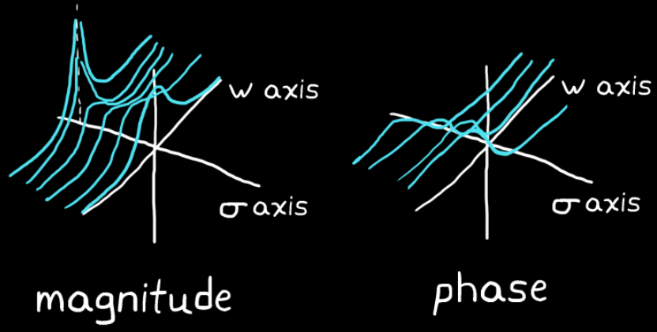

It is possible to fill out the s-plane graph by manually:
Choosing a $\sigma$
Multiplying the time domain impulse response signal with $e^{-\sigma t}$
Taking the fourier transform of the result

Filling out the s-plane produces a 3D surface with interesting peaks and valleys
It would take an infinite number of fourier transforms, one for each of the infinite $\sigma$ values, to completely fill in the s-plane 3D map. The laplace integral performs the infinite number of steps all at once.
In reality, rather than graph the resulting surface, the interesting points are found algebraically using the result of the laplace function.
Example
Consider the impulse response:
$$
f(t) = e^{-t}
$$
The laplace integral solution:
$$\begin{align*}
F(s) &= \int^{\infty}_{-\infty} e^{-t} e^{-st}dt \\
&= \int^{\infty}_{-\infty} e^{-(s+1)t}dt \\
&= \frac{1}{s+1}
\end{align*}$$
The interesting point is when $=-1$ because the function blows up to infinity at that point.